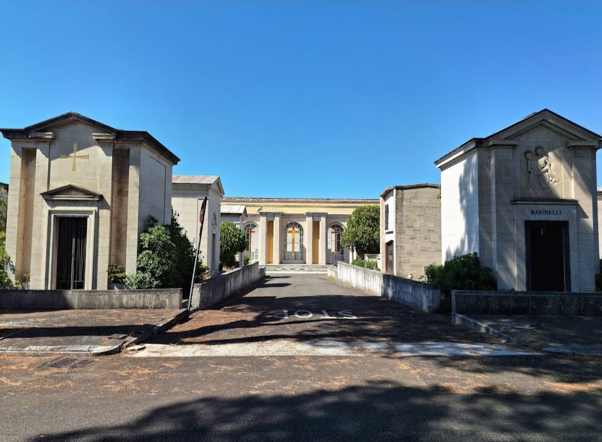

Roma, 22 Marzo 2023 - Nella notte scorsa, un'esplosione ha scosso la zona attorno il cimitero del Verano durante un'esercitazione condotta dai Reparti Operazioni Speciali (ROS) delle forze dell'ordine. L'incidente è stato causato da una fuga di gas che ha portato alla distruzione di un capanno degli attrezzi situato in prossimità dell'area dell'esercitazione. Fortunatamente, non si sono registrati feriti in seguito all'esplosione. Testimoni oculari, residenti nelle vicinanze, avevano riportato spari e colluttazioni avvistati in zona. Tuttavia, è emerso che tali eventi erano parte della simulazione dell'esercitazione condotta dai ROS. Le autorità competenti stanno attualmente indagando sull'incidente per stabilire le cause esatte della fuga di gas e garantire la massima sicurezza nelle operazioni future dei Reparti Operazioni Speciali. L'episodio serve da promemoria dell'importanza delle misure di sicurezza nelle operazioni di addestramento delle forze dell'ordine, al fine di evitare incidenti simili in futuro. È importante sottolineare che l'esercitazione è stata condotta in modo sicuro e professionale dai ROS, dimostrando la loro abilità a gestire situazioni di emergenza con efficienza e rapidità.
